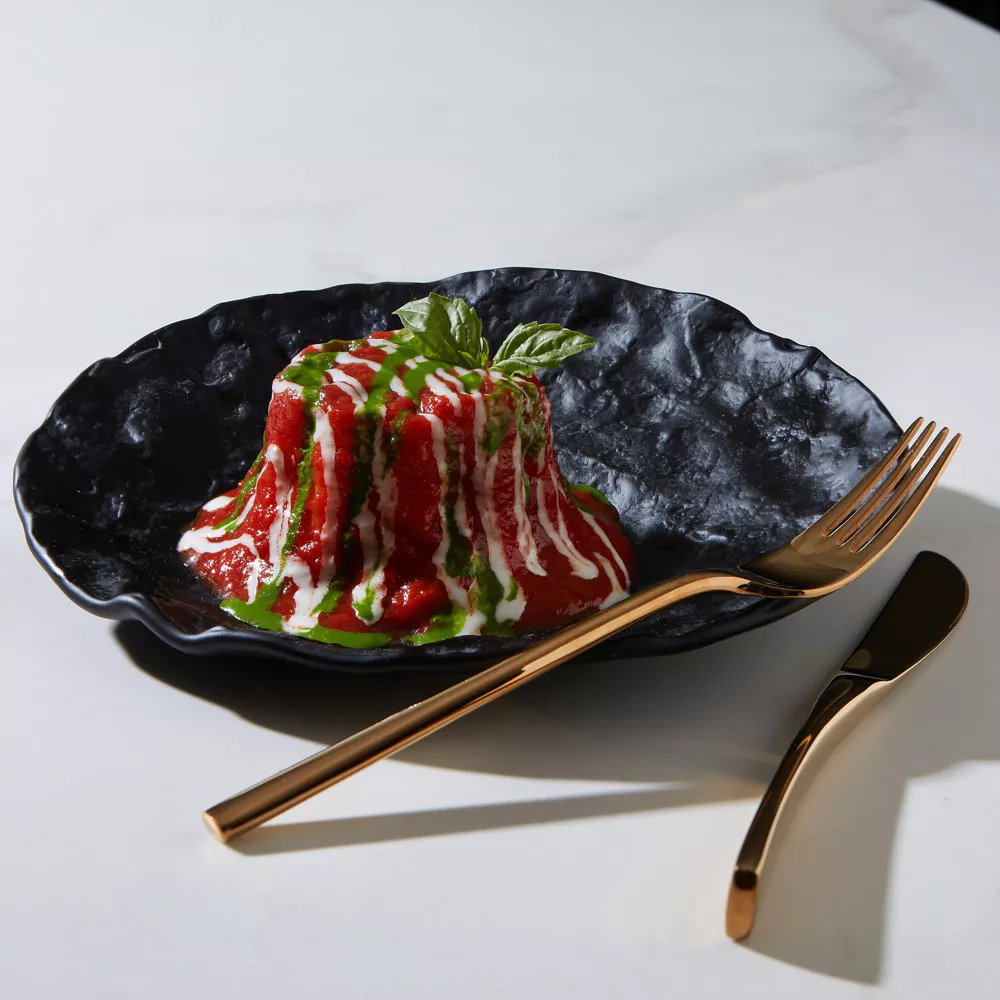

ITÁLIA
Porque a Itália ?
A culinária italiana é considerada uma das mais populares e influentes do mundo, com pratos icônicos como pizza, pasta, risoto, e tiramisu que conquistaram o paladar de pessoas em todo o mundo. A cozinha italiana é conhecida por sua simplicidade, sabores fortes e ingredientes frescos, e é a culinária que mais representou a cultura gastronômica italiana em todo o mundo. A história da culinária italiana remonta há mais de dois mil anos, e sua influência se espalhou por todo o mundo através de emigrantes italianos. Durante a Idade Média, a Itália foi um importante centro comercial para especiarias e outros alimentos exóticos, e a cozinha italiana evoluiu a partir daí. A culinária regional italiana é extremamente diversa, com cada região possuindo suas próprias especialidades e ingredientes locais.
Como é a sua culinária ?
Os pratos variam de região para região, mas em geral, incluem massas como espaguete, lasanha, ravióli, frutos do mar como lulas, camarões e polvo, pizza, queijos como parmesão e mozzarella, e sobremesas como tiramisu e panna cotta. O café expresso também é um elemento importante na cultura culinária italiana.

O que ela tem de diferente ?
A culinária italiana se espalhou para outros países, e hoje é possível encontrar restaurantes italianos em praticamente todos os cantos do mundo. Em muitos casos, a culinária italiana foi adaptada para os gostos locais, mas ainda mantém suas raízes italianas, e muitas vezes utiliza ingredientes e técnicas culinárias autênticas. A culinária italiana é uma parte importante da cultura e da identidade italiana, e sua influência em todo o mundo é um testemunho do seu sabor e qualidade. É uma culinária que valoriza os ingredientes de alta qualidade, a simplicidade e a criatividade, e isso é o que a torna tão apreciada em todo o mundo. A culinária italiana é uma celebração da vida, do amor e da comida, e é por isso que ela continuará a ser uma das mais populares e influentes do mundo por muitos anos.